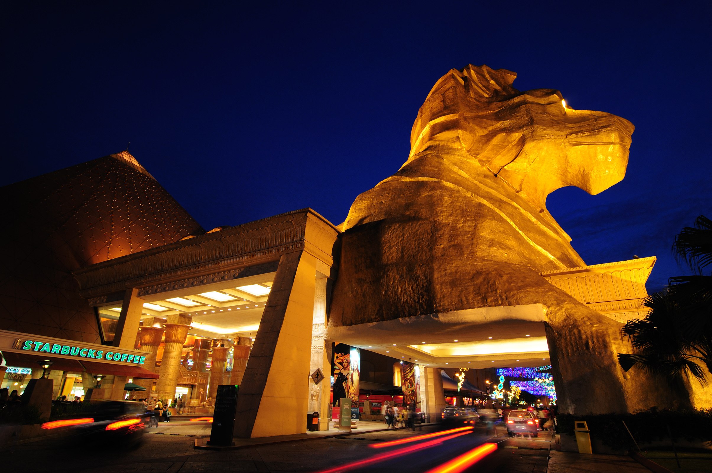

Published on 5 June 2025
Get ready, Sunway City! Fleur de Lait is thrilled to bring our signature French-Malaysian flavors closer to you with a brand-new pop-up located in the bustling heart of Sunway Pyramid. This special event is designed to celebrate our loyal fans while welcoming new ones into the creamy, dreamy world of artisan ice cream.
At our pop-up, you'll be the first to taste upcoming limited-edition flavors before they hit our main stores. From unique tropical fusions to our nostalgic hometown favorites, every scoop is a surprise. Plus, we're rolling out an exclusive line of Fleur de Lait merchandise, available only during this event!
This isn't just a booth-it's an interactive journey into the making of our ice cream. Peek behind the scenes with visual displays, taste-test experimental flavors, and snap whimsical photos with our signature pink cart. Whether you're a foodie, a family, or a curious passerby, there's something here for everyone.
The pop-up is open daily from 5 June to 15 July 2025, located on the Ground Floor, East Wing of Sunway Pyramid Mall. Come early-some items and flavors are only available in limited quantities each day!
← Back to Blog